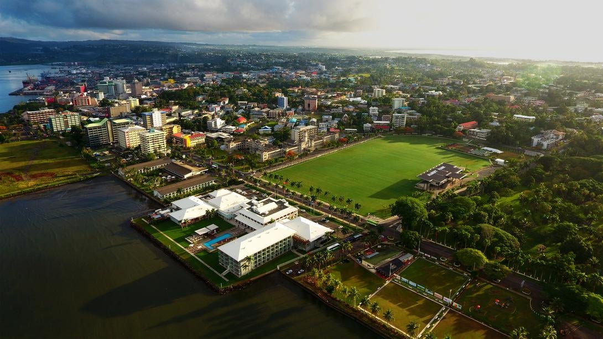
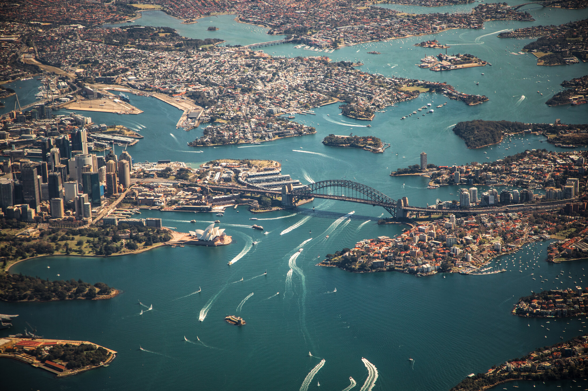

I was raised in Fiji for 10 years but was born in Australia. I see Fiji as my home though, my family and friends are there. I'm the second oldest of four brothers with a single mom. She reaised us well, and we eventually ended up at the LDS primary school in Fiji. From there we spent several years and eventually becoming members. Only my brothers and I became members though. I received a scholarship to come here and I am super grateful for this opportunity, having a lot people that share the same values and goals as you creates such an unique environment.
This is Suva City
This is Sydney City
